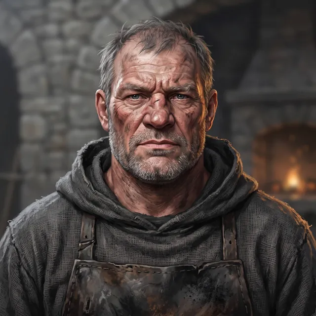

Brother Cobb
The House's farrier
Only what the story has shown so far.
Appearance
A lay brother in his fifties, short and wide through the chest, with forearms like a drover's and a leather apron black at the belly; a square weathered face gone red at the cheeks, soot in the creases, a nose flattened long ago, pale blue-grey eyes under heavy brows, grey stubble on the jaw, and short hair cropped close and going grey. Burn scars pale and shiny on both hands, and across the back of the right a half-ring of small white marks he calls a burn. He wears the House's grey hood pushed back and his sleeves past the elbow in any weather, and smells of coal and hoof-oil though nothing has worn a shoe up here in his time.
Now
Last seen Chapter 4 · Between — Never Bitten · Saint Ysolde's
At his forge below the cloister with the next piece of leather, the fire banked to a red eye. He has sent the Captain up to Hollis with the remade cup and wants the word of where it bites brought back to him.
Story so far
Relationships
- Ser Hollis Garrowmade his leg
He turned the beech leg in a week off a tracing on sacking and is remaking its leather cup to the stump, which Hollis will not come down to have measured.
The Reckoning
Level 3 · Bound
Ember low
Arts Iron Grip II
Deeper ⟦ unread ⟧
Read with Warden's Eye III. Stronger sight reads deeper. The ranks of the Ember run Bound · Kindled · Tempered and up; Oathsworn is borrowed strength.
Known facts
What the page has shown (7)
- He says he has never been bitten by anything in his life, and that the half-ring of marks on his right hand is a burn from a bar taken out of the fire with the wrong hand forty years back.Chapter 4 · Between — Never Bitten
- He made Hollis's beech leg in a week off a tracing on a bit of sacking, because the Mender said Hollis would not wait.Chapter 4 · Between — Never Bitten
- He says a cup is not made once but made to the stump, which changes, and Hollis will not come down to him to have it fitted.Chapter 4 · Between — Never Bitten
- He held the branding iron at the fair for twenty years before the mountain, burning the lances' brands onto Edgemoor greys, and keeps the brands chalked on a board by the forge door because a hand forgets.Chapter 4 · Between — Never Bitten
- His forge shoes nothing; it holds laths stacked by length, a drum's tooth on the anvil, and a row of bell clappers from the size of a thumb to the size of a forearm.Chapter 4 · Between — Never Bitten
- He sent the Captain up to Hollis with the remade cup: ten steps, not nine, and the word of where it bites to come back to him.Chapter 4 · Between — Never Bitten
- He says a man going up to the hall with his hands full is better than one coming down with them empty.Chapter 4 · Between — Never Bitten